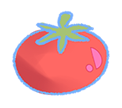
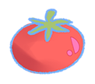

kizxm @ yahoo
Hey! I'm Kira! I draw, I code, I create, I design and heck yeah I do it all. I'm high energy, big smiles and a life-long learner. Why are there so many tomatoes? They're my favorite fruit, and I wanted them to be everywhere. I want to make everything as cool or good looking as I can. When I get home I just want to watch anime and play games with my cat. Aaaaand that's about all I've got. Thanks!


 
